第二章 阳光收集功能模块分析
前面两篇文章我们主要介绍了如何去寻找一些游戏数据和基址。在网络游戏中，一些关键数据都是存储在服务器上的，在本地只是显示，改了也没啥用，这里我们就要针对游戏的一些功能模块进行分析从而实现一些辅助功能。由于网络游戏不能拿来作为例子（PS：你们懂得），所以我们还是以单机游戏为例。本篇文章我们主要分析阳光收集功能模块实现自动收集阳光辅助。
1、CE （游戏内存修改器）
Cheat Engine，简称CE，是由Eric Heijnen(网名“Dark Byte”)开发的一款开源软件，主要功能包括存储器扫描，十六进制编辑，指令反汇编，内存数据修改等功能，是一款强大的游戏修改器。Cheat Engine是最常见的游戏外挂工具，通过Cheat Engine，用户可以快速查找和修改游戏数据及更改游戏处理逻辑。
下载地址：
链接：https://pan.baidu.com/s/1pLebzsB 密码：c4el
2、植物大战僵尸（游戏）
下载地址：
链接：https://pan.baidu.com/s/1dFPduy1 密码：xgz2
Tip：本游戏有捆绑软件，安装时请去除安装捆版软件的勾选，启动游戏时有设定主页的选择，请无视它点击否。
3、IDA Pro
交互式反汇编器专业版（Interactive Disassembler Professional），人们常称其为IDA Pro，或简称为IDA。是目前最棒的一个静态反编译软件，为众多0day世界的成员和ShellCode安全分析人士不可缺少的利器！IDA Pro是一款交互式的，可编程的，可扩展的，多处理器的，交叉Windows或Linux WinCE MacOS平台主机来分析程序， 被公认为最好的花钱可以买到的逆向工程利器。IDA Pro已经成为事实上的分析恶意代码的标准并让其自身迅速成为攻击研究领域的重要工具。它支持数十种CPU指令集其中包括Intel x86，x64，MIPS，PowerPC，ARM，Z80，68000，c8051等等。
由于本软件是收费软件，这里不做分享。
打开IDA PRO你就会看见一个初始欢迎界面。上面显示了你的许可证之类的信息。初始界面消失后，IDA会显示另一个对话框，为你进你进入桌面环境提供了三个选择。
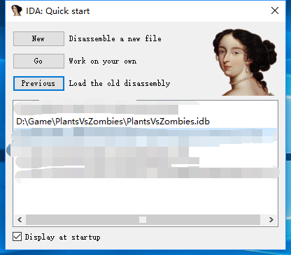完成上面上面步骤后IDA会如下图所示：
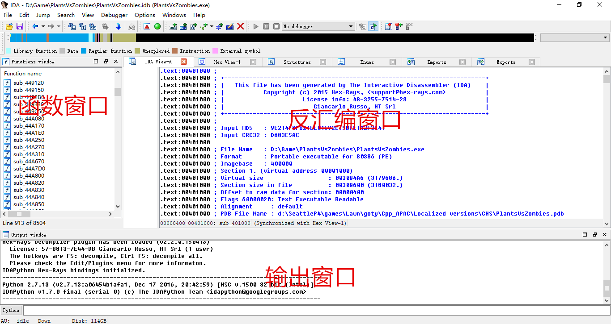Jump -> Jump to Address打开Jump to Address对话框
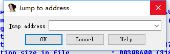也可以使用快捷键G键，注意在输入法英文状态下。
CALL就是相当于易语言里的子程序，相当于C++里面的函数。
每个CALL都有用途，很多独立的功能都可以封装在CALL里，这样调用这个CALL也就调用了对应封装的功能。
CALL有“参数”，也有“返回值”
“参数”可以是没有，也可以是多个。
“返回值”一般通过EAX寄存器返回。
说到分析阳光收集功能模块，首先我们要知道从哪里入手啊。为了照顾基础薄弱的读者，我会尽量做到步骤清晰，如有描述错误还请指出，谢谢。
步骤一、打开游戏
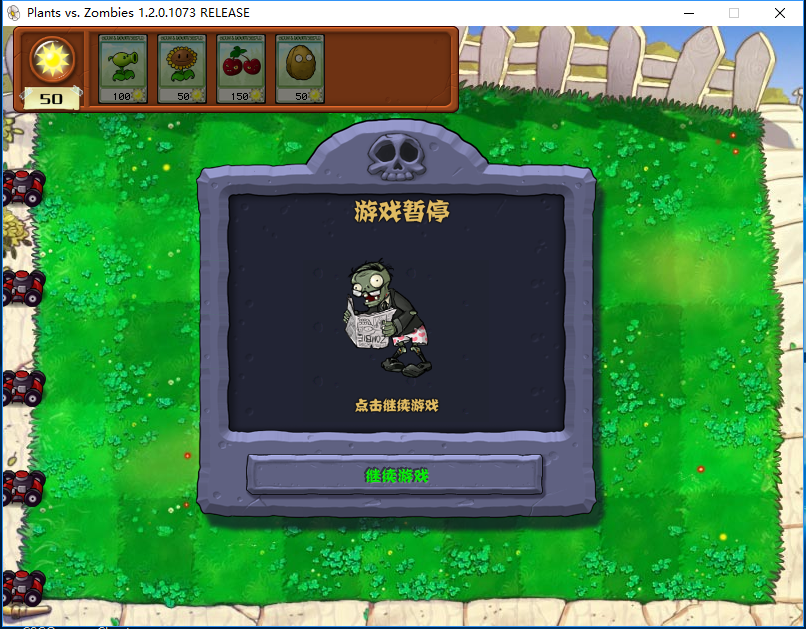步骤二、打开CE，加载游戏进程
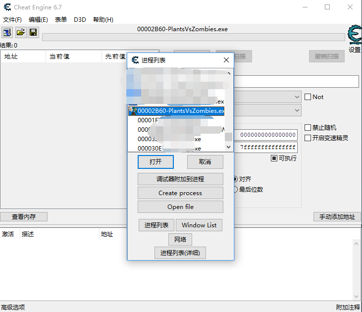步骤三、使用精确搜索方式搜索阳光数值50
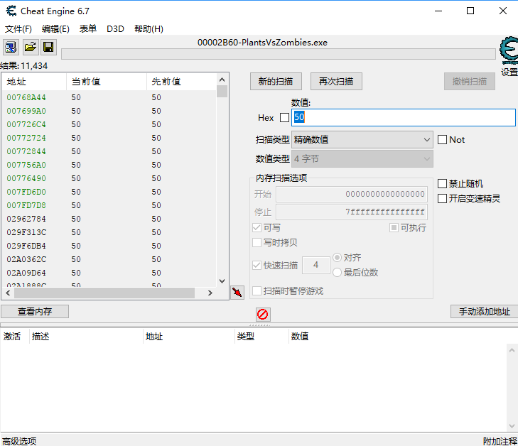步骤四、回到游戏拾取阳光从而改变阳光数值
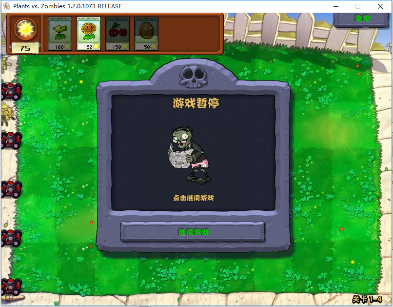步骤五、回到CE，将50修改为75点击再次扫描
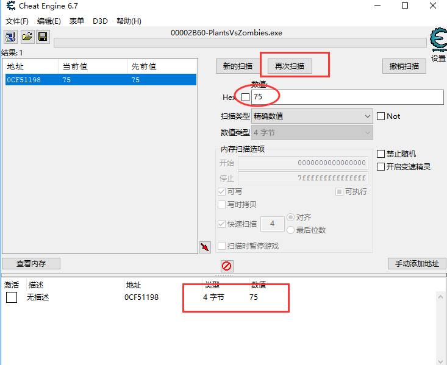步骤六、这样我们就找到了阳光数值的存储地址，我们右击它，选择找出是什么改写了这个地址
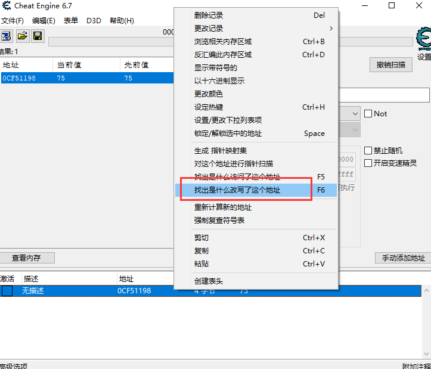步骤七、继续回到游戏拾取阳光，然后回到CE，发现我们已经找到了改变阳光的地址
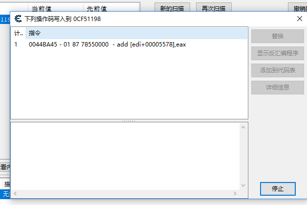步骤八、选中它右击，选择在反汇编程序中显示地址
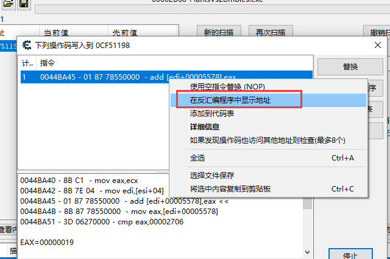步骤九、在打开的内存浏览器中，点击视图，将显示模块地址勾去掉。
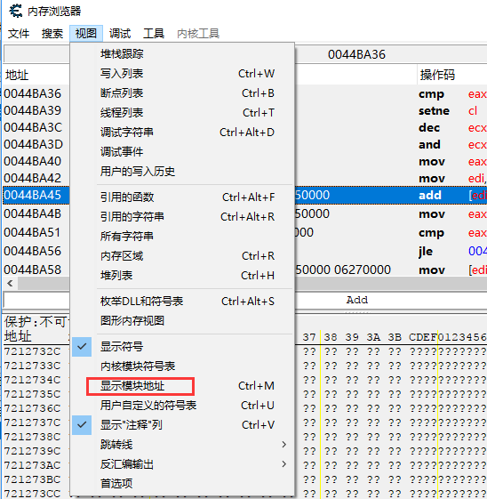这样我们就能和IDA PRO同步分析啦，这里地址我们早就知道了，0044BA45
一个入手点我们有了，不急，我们先用IDA来分析看看。
首先我们打开IDA PRO,直接点击Go打开一个空白的工作区，然后将游戏程序直接拖进去，当然以什么方式随你啦。
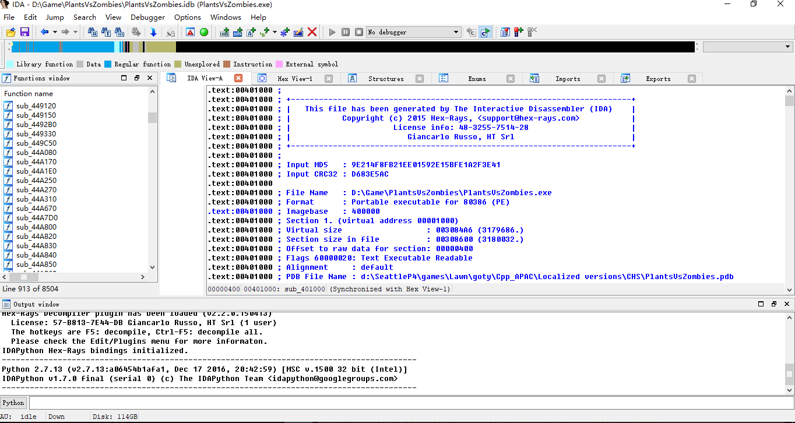我们先跳转到地址0044BA45，基础知识介绍到了，这里不再赘述。
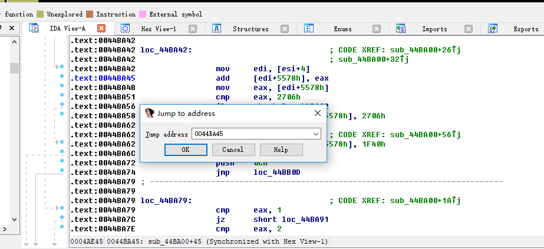这个地址是增加阳光的我们先注释一下
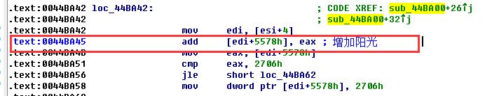往上回溯，可以发现是从地址0044BA26下去的，上面是阳光数量增加量，19是十六进制，也就是十进制的25，收集一次阳光，阳光数量就增加25
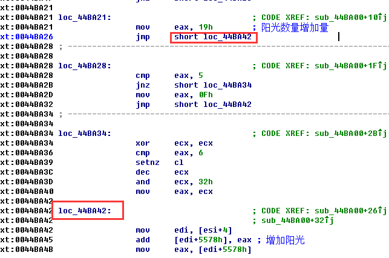按照这个思路继续往上回溯。
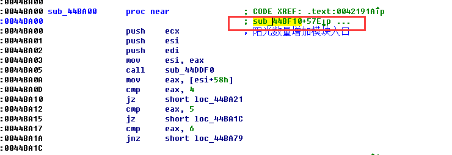交叉引用到调用点有两处。
第一处：
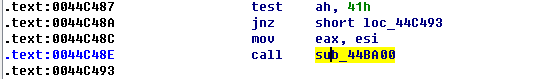第二处：（没有执行到）
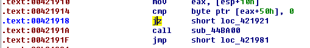这样我们就定位到了增加阳光的逻辑过程啦
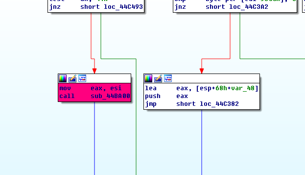经过上面的分析我们要锁定阳光收集的关键代码也不难，这里我们可以通过阳光收集与未收集标志位不同来找到关键代码。
其实很简单，我们先来尝试0和1。
那么未收集很大可能就是0啦，收集就是1，我们先来试试，未收集是0，所以初始数值很可能是0，我们先使用精确搜索。
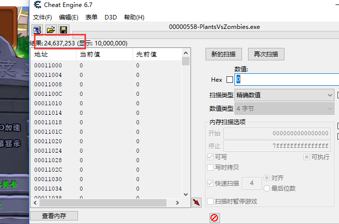结果很多，不用担心，我们回到游戏点击太阳进行收集，然后回到CE搜索1点击再次扫描。
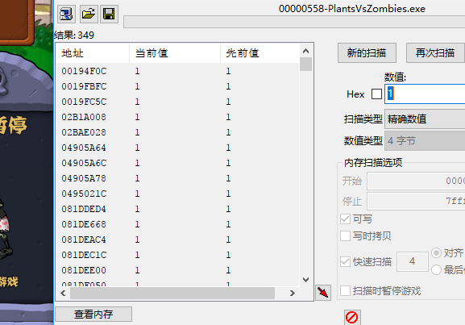结果是不是少了很多，我们继续重复上述动作，直至找到搜集标志位。（PS:太阳出来就回到CE搜索0）
为0的时候 未搜集:
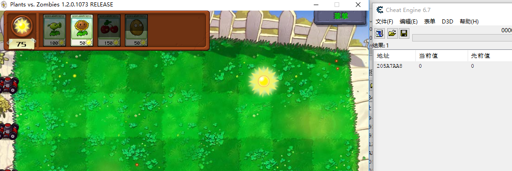为1的时候 搜集
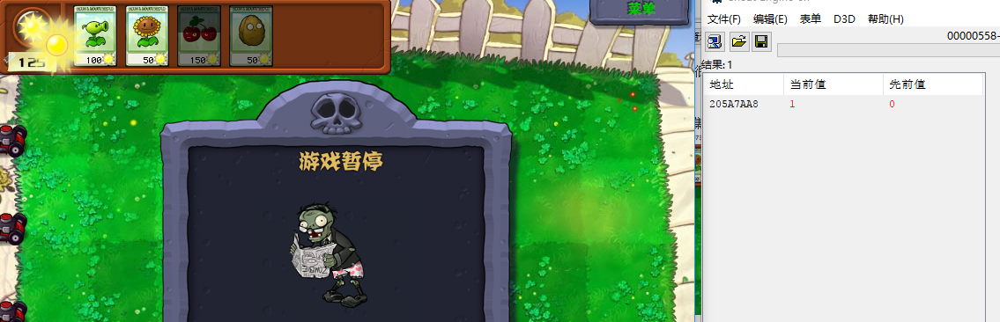找到了，我们双击这个地址。
右击它，找出是什么访问了这个地址。
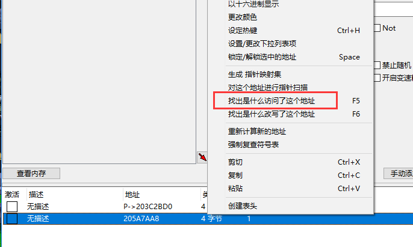回到游戏进行一次阳光收集操作，回到CE，看来已经有结果了。
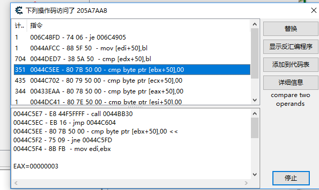逐个分析找到关键代码：
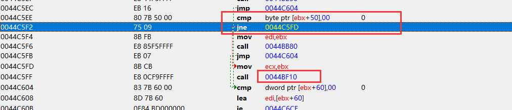接下来如何实现自动阳光收集？别急。
上面我们已经得到一个关键地址0044C5EE，我们使用IDA跳转到这个地址分析一下。
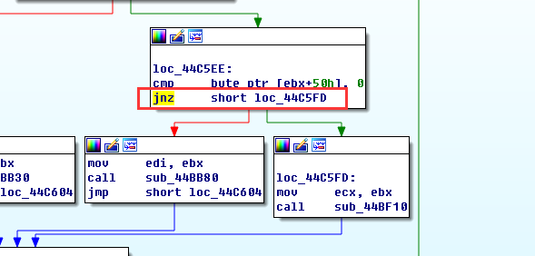JNZ
条件转移指令JNE/JNZ
格式: JNE/JNZ 标号
功能: ZF＝0,转至标号处执行
JMP
无条件转移指令JMP
格式: JMP OPRD
功能: JMP指令将无条件地控制程序转移到目的地址去执行
我们修改跳转指令为JMP就好了。
进入自动汇编：
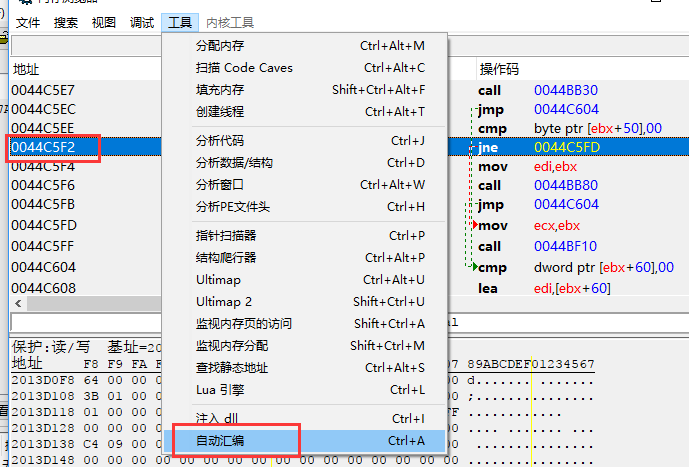模板->代码注入：
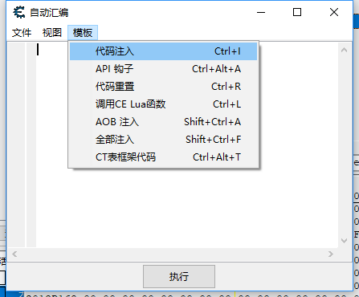修改跳转指令为JMP后点击执行：
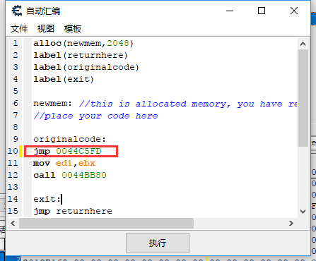效果演示：
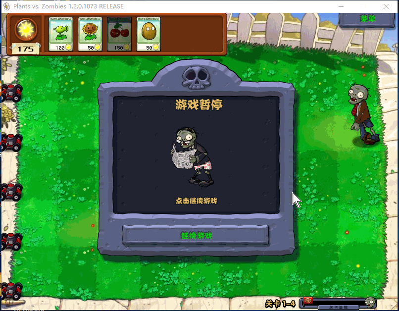针对这类防御我们可以改写某些功能模块功能的标志位，防止分析得出功能的关键代码，进而实现一些辅助功能。最后感谢你能抽出时间阅读本篇文章，希望能帮助到你，谢谢。